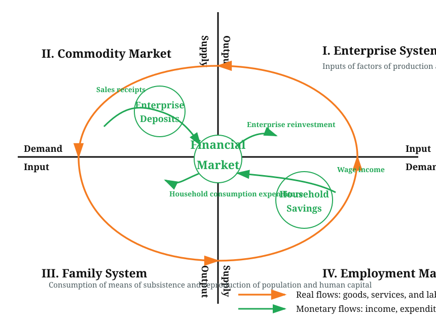
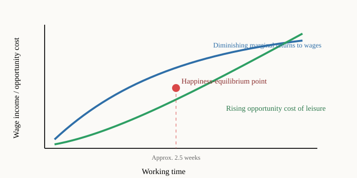
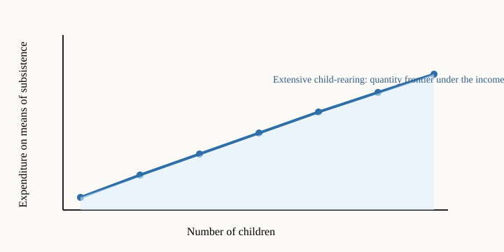
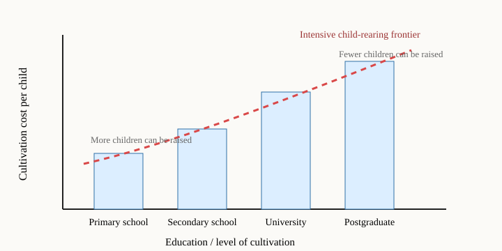

Introduction
Contemporary human society has three kinds of production: the production of population and human resources with the family as the unit; the production of goods and services with the enterprise as the unit; and the government-led production of public goods. In a market economy, families, enterprises, and government each act as both suppliers and demanders in relation to one another, forming three major supply-and-demand relationships mediated by money: the supply of and demand for labour-power as embodied human capital, enterprise products, and public goods. Resources in the supply of and demand for labour-power as embodied human capital and enterprise products are allocated mainly through market mechanisms; resources in the supply of and demand for public goods are allocated through non-market means under government leadership.
The configuration of Family-Household Rights, Enterprise Rights, and Government Power determines the pendulum movement of equilibrium and disequilibrium in these three major supply-and-demand relationships. It thereby constructs the political-economic institutions and operating mechanisms that drive economic and social development.
The defect in the foundational theory of modern (Western) economics is that it focuses chiefly on “one kind of production” in the market economy: enterprise production and the role played by equilibrium and prices in the supply of and demand for its products in resource-allocation efficiency and wealth growth. Although it touches on the “dialectical movement of the two kinds of production” undertaken by families and enterprises, the “non-market equilibrium of supply and demand” for public goods, and the contradictory yet unified movement of the three major supply-and-demand relationships, its attention to and depth of research on these subjects are seriously inadequate. It therefore cannot explain China’s real economic problems, still less offer valuable proposals and solutions for China’s economic development. China’s own system of economics is not yet mature; economic theory lags far behind economic practice, leaving the country to “cross the river by feeling for the stones.”
This article takes as its sample N. Gregory Mankiw’s widely used textbook Principles of Economics, 8th edition,[1] in order both to learn from the outstanding achievements of modern (Western) economics and to identify its defects and errors. It seeks paths and methods for remedying those defects and attempts to make a modest contribution to the construction of China’s own system of economics.
I. A Comparison of Two Foundational Economic Models
An economic model is a theoretical tool for describing and explaining the organizational structure and operating mechanisms of an economy. The circular-flow diagram is a foundational model of modern (Western) economic theory. It is not only an introductory tool for learning economics, but also the basic framework for understanding more complex economic models and analysing economic problems.
As a foundational model, the circular-flow diagram is the cornerstone and argumentative basis of the entire edifice of economic theory. If this model contains “structural defects independent of its assumptions,” the system of economic theory built upon it may also contain structural defects.
According to page 23 of the Chinese translation of the microeconomics volume of Principles of Economics, Mankiw simplifies the economy into two types of decision maker, enterprises and households—the Chinese translation renders the latter as “families”. Enterprises use such inputs as labour, land, and capital—including buildings and machines—to produce goods and services; these inputs are termed factors of production. Households are described as owning the factors of production and consuming all the goods and services produced by enterprises.
The two circular-flow diagrams show, at the micro and macro levels respectively, how enterprises and families, as two types of actor, transact through two markets with money as the medium, generating recurrent circular movements of commodity, monetary, and information flows. Mankiw’s Principles of Economics constructs a complete system of foundational economic theory on these two models.
Mankiw’s circular-flow diagram, however, contains “structural defects independent of its assumptions.” The problem lies not in whether its assumptions are right or wrong, or too many or too few, but in the following three respects:
First, it confuses the differences between families and enterprises in their organizational character, basic functions, property-rights foundations, objectives, and modes of behaviour.
Second, it overlooks the essential difference between the reproduction and operating logic of family population, labour-power, human capital, and human resources, and the operating logic of the reproduction of goods by enterprises.
Third, it overlooks the dialectically unified relationship in which family population reproduction and enterprise goods reproduction—the two kinds of production—contradict, depend upon, and transform into one another in an endless cycle.
To make this clearer, this article proposes an economic model called the “Diagram of the Dialectical Circulation of Two Kinds of Production” (Figure 1-1).

This model emphasizes that the underlying logic of the market economy is the unity of opposites between family population reproduction and enterprise product reproduction. Families and enterprises are property-rights-bearing entities and market resource allocators of different organizational character. Commodity, monetary, and information flows, equilibrium prices, and resource allocation are only the concrete forms in which the unified and oppositional movement of the two kinds of production manifests itself.
II. The Fundamental Error in Mankiw’s Property-Rights Theory
The protection of property rights within a framework governed by the rule of law, and market-mechanism pricing for allocating resources, are the two foundations of the market economy. Mankiw’s Principles of Economics does not devote a separate chapter to property-rights theory, but it gives an erroneous definition of property rights: families own the factors of production. This is a fundamental error that leads to several subsequent fallacies.
1. Ownership Theory and Property-Rights Theory
The concept of ownership is associated with Marx’s analysis of early capitalism. It refers mainly to ownership of the material means of production, including private ownership, public ownership, and mixed ownership. Ownership theory is an argumentative foundation of Marxian political economy.
Property-rights theory is associated with modern enterprise institutions. It concerns the attribution of rights and interests in diverse material and non-material factors of production and involves such economic categories as joint-stock ownership and the socialization of capital. Property rights comprise four entitlements: ownership rights, rights of use, rights of control, and rights to income. These four entitlements are dynamic, continually separating and recombining.
Property-rights theory overturns and transcends ownership theory. In the language of ownership, private possessors of the means of production are capitalists who exploit workers. In the language of property rights, however, the process of the “socialization of capital” enables anyone, including workers and farmers, to buy shares in listed companies and become participants and investors in resource allocation. In some Western countries, workers hold corporate shares through trade unions, making workers and capitalists, to some extent, a “community of interests.”
2. Families Are the Natural Private Owners of Labour-Power, but Not Necessarily of Capital or Land
According to the Chinese translation, Mankiw describes households as owning the factors of production and as being the sellers, with enterprises as the buyers, in markets for those factors.[2]
It is wrong, however, to define families generally as owners of the factors of production. These factors include labour, capital, and land. A family necessarily owns labour, but it does not necessarily own capital or land.
The family’s permanent property right is the natural-law-based Private Ownership of Labour-Power as Embodied Human Capital. Labour-power as embodied human capital exists naturally within the life of an individual and, except under slavery, belongs by nature to the family or the individual. It can be extinguished only by the destruction of life itself.
After the Industrial Revolution, however, ownership of the means of production became separated from ownership of labour-power. Following the primitive accumulation of capital, most families possessed no factors of production other than their labour-power and had to live by selling it.
The essence of capital is the human consciousness and mode of thought that, grounded in human desire, pursue wealth and efficiency. Precisely because capital coexists with human nature and wealth, any pursuit of common prosperity must rely on capital. The feasible path is not to eliminate capital through class struggle, but to separate and recombine the various entitlements of capital: on the one hand, transforming capitalists into entrepreneurs; on the other, enabling workers to become “capitalists” in an entirely new sense—holders of equity in capital.
3. China’s Property-Rights Reform: A Path from Public Ownership to the Market Economy
In 1956, China completed the socialist transformation of the ownership of the means of production and established public ownership as its sole form throughout the country—ownership by the whole people and collective ownership—thereby laying the ownership foundation for the planned economy.[3]
The transition from a planned to a market economy confronted two major tasks: price reform; and reconstruction of the microeconomic foundation—that is, establishing modern enterprise institutions and a mixed-ownership market economy under the guidance of property-rights theory.
The socialist transformation of ownership of the means of production could eliminate private ownership of those means, but it could not eliminate the natural private ownership by individuals of labour-power as embodied human capital. This means that even within an economic ecology of public ownership, everyone has private interests. Such interests are a normal expression of the natural private ownership of labour-power. Under egalitarian distribution, doing less is equivalent to earning more, inevitably encouraging people to pursue equal returns at the lowest labour cost. This is the fundamental reason for the failure of the planned economy.
China’s property-rights reform occurred mainly in three domains:
Rural property-rights reform began with the household contract responsibility system, separating land ownership from rights of use. The arrangement summarized as “deliver enough to the state, retain enough for the collective, and keep the remainder for oneself” greatly increased farmers’ productive incentives, released hundreds of millions of surplus rural labourers, and gave rise to a vast migrant-worker population, accelerating industrial modernization, urbanization, and even globalization.
Property-rights reform of state-owned enterprises centred on joint-stock ownership and the socialization of capital, establishing modern enterprise institutions. Reform has made substantial progress, but defects in corporate governance, information asymmetry in multi-tiered principal–agent relationships, absent shareholders, and insider control have not been fundamentally resolved. Reform therefore needs to deepen further.
Reform of labour and personnel institutions broke the “iron rice bowl” and egalitarian “big-pot” distribution of the planned economy, liberated workers from the “work-unit system of labour attachment” (danwei), and established private ownership of labour-power as embodied human capital. In contemporary society, human capital has surpassed the material means of production to become the most important factor of production.
Core judgement: The practice of China’s property-rights reform proves that the state-owned sector and the market economy are not inherently incompatible. Unswervingly consolidating and developing the public sector and unswervingly encouraging, supporting, and guiding the development of the non-public sector is precisely one of the advantages of China’s system. The property-rights foundation of the market economy is therefore not limited to private property rights: public ownership of non-human factors of production is likewise an inseparable component of that foundation.
III. Rational Household Behaviour: The Economic Laws of Population Reproduction
1. Property Rights and Household Behaviour
Over a long historical evolution, the human family developed into the modern nuclear family, whose basic functions are population procreation and cultural transmission. We hypothesize that the objective of families in a market economy is the pursuit of labour-income-based happiness maximization.
Economically, family population procreation is a process of “production through consumption”: the process of household consumption is simultaneously a process of population production. The purchase of factors of daily living requires income, which creates effective purchasing power. In reality, most household income comes mainly from wages or salaries. The pursuit of maximum wages and salaries is therefore a basic feature of rational household behaviour. Together with the profit-maximizing behaviour of enterprises, it forms a relationship that is contradictory yet interdependent.
2. Wage Maximization Based on Happiness Maximization
As working time continues to increase, fatigue rises and the marginal happiness derived from work declines. More time for consumption and recreation means less wage income, while the marginal opportunity cost rises. Maximum happiness therefore requires workers to find an equilibrium between hard work and the enjoyment of life.

3. Modes of Child-Rearing and the Family Population Possibility Frontier
Family child-rearing takes two forms:
Extensive child-rearing: Only the basic needs required to sustain a child’s life and growth are met. The family population increases in quantity without improving in quality.
Intensive child-rearing: Greater attention is paid to the child’s all-round moral, intellectual, physical, and aesthetic development, with educational attainment as the measure. It is a dynamic process in which standards of both material and cultural-spiritual life continually rise.


With household income given, extensive child-rearing can increase population quantity but leaves quality stagnant; intensive child-rearing can improve quality but reduces the number of children. Young people thus face an unavoidable choice: it is not that they are unwilling to raise children, but that they fear they cannot afford to raise them or raise them well.
IV. The Unified and Oppositional Movement of the Two Kinds of Production by Families and Enterprises
1. Markets for Factors of Production and Markets for Factors of Daily Living
Another defect of Mankiw’s circular-flow diagram is its failure to distinguish clearly between “markets for factors of production” and “markets for factors of daily living,” and between “human factors of production” and “non-human factors of production.”
Markets for factors of production: Both buyers and sellers are enterprises, generating “intermediate demand” (derived demand).
Markets for factors of daily living: Enterprises are sellers and families are buyers, generating “final demand.”
Mankiw’s account, according to the Chinese translation, treats households as consuming all goods and services produced by enterprises.[4] This confuses intermediate and final products, and investment and consumption, sowing confusion for the analysis of aggregate demand in macroeconomics.
Moreover, the laws governing the supply of and demand for “human factors of production” (labour-power as embodied human capital) are entirely different from those governing “non-human factors of production” (land, capital, machinery, and factories). They cannot be subsumed indiscriminately under a single undifferentiated “market for factors of production.”
2. “Productive Forces Running Ahead, Life-Reproduction Capacity Lagging Behind”: Market Failure and the Disequilibrium Movement of the Two Kinds of Production
Under a laissez-faire market mechanism, five causes keep the disequilibrium state of “Productive Forces Running Ahead, Life-Reproduction Capacity Lagging Behind” in existence over the long term:
1. Institutional arrangements: the evolution of enterprise institutions, which continually strengthens them, and the evolution of the institution of the family, which gradually weakens it, proceed in opposite directions.
2. Income distribution: wage growth always lags behind profit growth, leaving families in a weak position.[5]
3. Inputs and outputs: household consumption inputs always lag behind enterprise production inputs.
4. Reproduction cycles: intermediate demand among enterprises can circulate independently of final demand from households, producing excess capacity.
5. Monetary circulation: money circulates faster among enterprises than between enterprises and families.
In the labour market, this problem appears as an imbalance between supply and demand, making unemployment a normal condition.
3. Mankiw’s Errors in Analysing the Short-Run Labour Market
Mankiw’s theory of labour-market equilibrium fails in reality for three reasons.
First, the assumption of “perfect competition” has never existed in reality; information asymmetry is normal in the labour market.
Second, Mankiw turns the supply of labour-power into a supply of “working time,” thereby substituting one concept for another. What is bought and sold in the labour market is the “commodity labour-power,” not unmeasurable “labour.” Jobseekers weigh the input–output ratio of their labour-power as embodied human capital over a twenty-year production cycle, not a choice between “working time” and “leisure time.”
Third, the two kinds of production have asynchronous reproduction cycles, and the supply of labour-power exhibits “supply rigidity.” Under structural disequilibrium, wages almost completely lose their capacity to balance the supply of and demand for human resources.
Conclusion: The ultimate cause of short-run disequilibrium between labour supply and demand is the lack of coordination and synchronization between the two kinds of production, which creates spatio-temporal mismatches between jobseekers and job vacancies in quantity, quality, structure, and distribution.
4. Economic Crises and Business Cycles: Solutions to Market Failure behind Two Narratives
There are two solutions to the market failure caused by “Productive Forces Running Ahead, Life-Reproduction Capacity Lagging Behind”:
Option One: Market mechanisms plus economic crisis. Equilibrium is forcibly restored through the destruction of production. The enormous cost is an unavoidable consequence of the primitive market economy.
Option Two: Market mechanisms plus government intervention. This is the modern market-economy model inaugurated by the “Keynesian Revolution.”[6] The narrative logic of macroeconomics is to study forward or countervailing adjustment at different stages of the business cycle, rather than economic crises.
V. From Population Explosion to Population Contraction: Transformation of the Population-Growth Pattern
1. Definition of the Transformation of the Population-Growth Pattern
The “transformation of the population-growth pattern” is defined as a shift in total social population growth from an extensive pattern of quantitative expansion to an intensive pattern characterized by decline in the total population, improvement in quality, and optimization of structure.
The concept of family planning slowed China’s population growth, but the “one-child policy” produced irrational age and sex structures in the macro population. More importantly, family-planning theory overlooked a key issue: as technology advances and the employment market changes, a turning point will eventually arrive at which the total population declines and population quality improves. Crossing this turning point initiates the transformation of the population-growth pattern.[7][8]
2. Data: The Transformation of China’s Population-Growth Pattern Has Already Occurred
Key data, 2000–2023:
| Indicator | 2000 | 2010 | 2022 | Trend |
| Total population | 1.267 billion | 1.340 billion | 1.412 billion | Shift from increase to negative growth |
| Total fertility rate (World Bank estimate) | 1.63 | 1.69 | 1.03 | Long-term decline, with year-to-year fluctuations |
| Households and NPISHs final consumption expenditure as a share of GDP | 46.8% | 34.6% | 37.8% | Declined, then recovered slightly; still below the global average |
| Population with university education or above (per 100,000 people; the final column for this indicator is from the 2020 population census) | 3,611 | 8,930 | 15,467 (2020) | Rapid increase |
China’s population registered negative growth in 2022, declining by 850,000 from 2021.[9] In 2023, 9.02 million births were recorded, close to half the 17.86 million recorded in 2016.[10] At the same time, population quality improved markedly.[11]
Under the World Bank’s current database definition, final consumption expenditure by Chinese households and non-profit institutions serving households accounted for approximately 37.8% of GDP in 2022, below both the global average of approximately 55.2% and India’s approximately 57.1% in the same year.[12]
3. The Internal Mechanism of the Transformation of the Population-Growth Pattern
The Diagram of the Dialectical Circulation of Two Kinds of Production makes the mechanism clear. Technological progress by enterprises in the first quadrant raises the requirements for the quality and structure of human resources. Transmitted through the labour market to population production in the third quadrant, it requires the supply of human resources to decrease in quantity, improve in quality, and optimize in structure. Changes in labour-market supply and demand caused by technological progress produce a trend of increasing marginal investment in education. The transformation of the population-growth pattern is ultimately the result of the operation of the market mechanism and the allocation of human resources through the labour market.
4. Policy Implications
Future population policy should focus not on controlling quantity, but on improving quality, optimizing structure, and rationalizing distribution.
Core principle: population production is “production through consumption.” Low consumption can produce only low-quality labour-power; high consumption expenditure on education corresponds to the production of high-quality human resources.
In the distribution of national income, primary distribution should substantially raise the share of household wage income, while redistribution should substantially increase expenditure on social welfare and social security, with the objective of achieving universal free healthcare, universal compulsory education, and universal lifelong education.
5. China’s Macroeconomic Management: A Shift from the Supply Side to the Demand Side
China has long since left behind the “shortage economy” and entered an “economy of structural surplus.” The excessively low share of household wage income in national income determines inadequate household purchasing power, consumption downgrading, and economic deceleration. This has become a major obstacle to China’s higher-quality economic development.
China’s macroeconomic management must transform: from focusing mainly on the development of Productive Forces on the supply side to giving equal weight to the supply and demand sides. In the near term, it must devote particular attention to low wage income and incomplete social welfare, which weaken families’ expectations about the future and make them reluctant to consume.
These are precisely the questions to be examined in depth in Part II: the macroeconomic analysis of the “three kinds of production.”
Notes
- Mankiw, N. Gregory. Principles of Economics, 8th ed., microeconomics and macroeconomics volumes, translated by Liang Xiaomin and Liang Li. Peking University Press. [Chinese edition.]
- Mankiw, Principles of Economics, microeconomics volume, Chinese translation, pp. 23–24.
- Party History Research Centre of the CPC Central Committee. History of the Communist Party of China, Vol. II (1949–1978). CPC History Press, 2011. [Working English title.]
- Mankiw, Principles of Economics, microeconomics volume, Chinese translation, p. 23.
- Piketty, T. (2014). Capital in the Twenty-First Century. Belknap Press of Harvard University Press.
- Keynes, J.M. (1936). The General Theory of Employment, Interest and Money. Macmillan.
- Malthus, T.R. (1798). An Essay on the Principle of Population.
- Meadows, D.H. et al. (1972). The Limits to Growth. Universe Books.
- National Bureau of Statistics of China. Statistical Communiqué of the People’s Republic of China on the 2022 National Economic and Social Development, February 2023.
- National Bureau of Statistics of China. Statistical Communiqué of the People’s Republic of China on the 2023 National Economic and Social Development, February 2024.
- National Bureau of Statistics of China. Communiqué of the Seventh National Population Census (No. 6). May 2021.
- World Bank, World Development Indicators, indicators
NE.CON.PRVT.ZS(households and NPISHs final consumption expenditure, % of GDP) andSP.DYN.TFRT.IN(total fertility rate), data retrieved 25 August 2026; National Bureau of Statistics of China, China Statistical Yearbook, various years. - See also Zhang Guangzhu, Economics of Labour-Power, Sichuan People’s Publishing House, 1989; Coase, R.H. (1937), “The Nature of the Firm,” Economica, 4(16), 386–405; Becker, G.S. (1981), A Treatise on the Family, Harvard University Press.